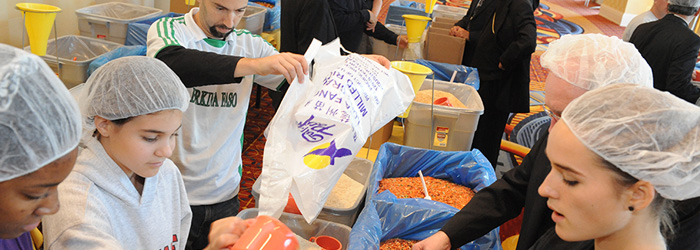

When you attend a Helping Hands event, you’ll see volunteers of all ages talking, making new friends, dancing as they package meals with Stop Hunger Now and working toward a community goal. You also might see:
The event can be an opportunity for formation and community building for your entire community or group if you use the Helping Hands educational resources.
Your community coordinator publicizes the event and directs interested Catholic volunteers to the Helping Hands website, where they can register by selecting their event on the event calendar on the community’s special event pages and make a donation to the event there too. Your coordinator works with the Helping Hands staff to determine the best way to fundraise for your event in your community. CRS and Stop Hunger Now work together to bring the event to your door. Stop Hunger Now delivers the food and supplies by truck, sets up and runs your event, and delivers your meals to CRS Burkina Faso.
CRS offers you a Helping Hands Organizer’s Toolkit with everything your community needs to plan a successful event. We make this easy for you!
CRS can arrange for a CRS speaker to open your event with a prayer, a story of a personal experience of hunger and an explanation of the gifts that your Helping Hands event will bring to the Burkina Faso community.
This fun, educational, hands-on event brings people together to a common call of service and redefines the familiar image of community service. It’s a tangible gift offered directly to the hungriest people in Burkina Faso. Helping Hands provides a unique opportunity for a community to discuss hunger, take action and enjoy fellowship at the same time. The event builds awareness of global hunger and offers actionable steps for Catholic volunteers to help beyond simply donating money or canned goods.
The post-event communications from CRS and Stop Hunger Now share the shipping and meal-delivery information with volunteers. CRS connects volunteers directly with those whose lives they have changed so volunteers can fully understand the effect they are having. After the event, CRS guides community volunteers to take other steps toward ending hunger.
|
|
Want to Join the Movement Against Hunger?E-mail Us: communitygiving@global.crs.orgCall Us: 1-877-435-7277 Write to Us: 228 W. Lexington St., Baltimore, MD 21201 |
|
© 2013 Catholic Relief Services, 228 W. Lexington St., Baltimore, MD 21201